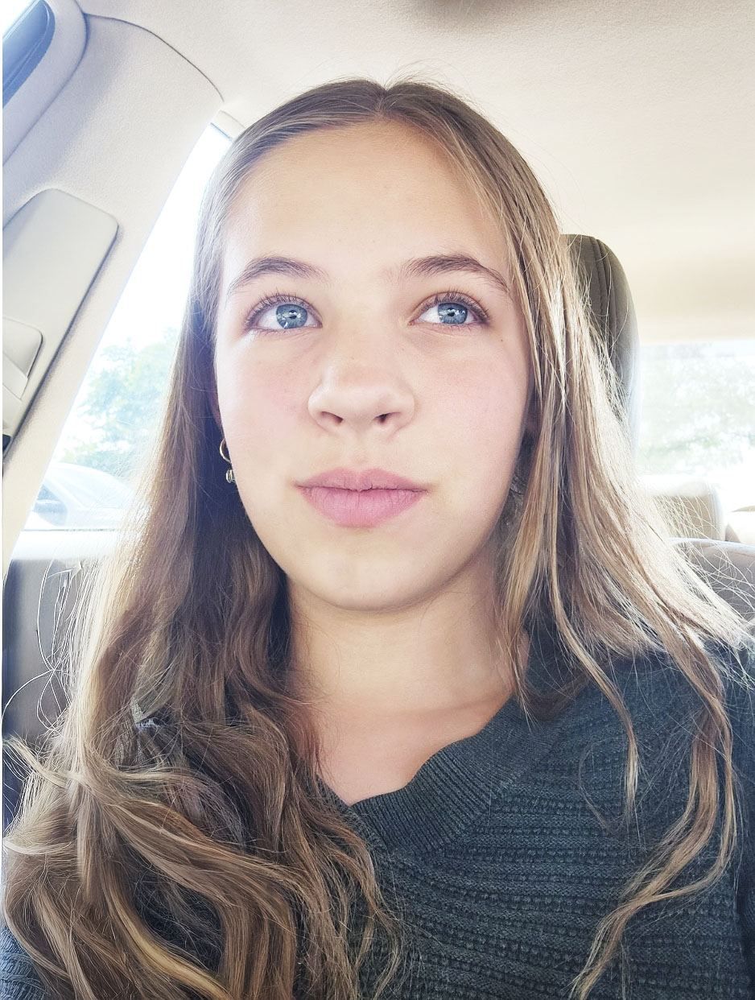

Arizalea Stewart is a young author from Toquerville, Utah, who has been writing stories since the age of five. She is currently developing her debut novel, My Mask Aside, a YA fantasy exploring themes of duty, identity, love, and the emotional “masks” people wear to survive their circumstances. Her writing is known for its emotional depth, symbolic magic systems, and character-driven storytelling, blending romance and fantasy with introspective detail. In addition to writing, she enjoys reading and drawing, both of which influence her creative process and storytelling style. Stewart is passionate about crafting meaningful narratives that explore human emotion and connection through imaginative worlds.
“I was, of course, only stoking his pride. He was not as popular as I told him he was, but all men want to feel important.”
"Around the stone circle was an aspen tree forest, leaves shaken gently by a soft breeze. Velvety grass lined a path from the stone."
"With all my heart, I wanted to love someone, and be with them, and have them hold me like I was the most important thing in the world."